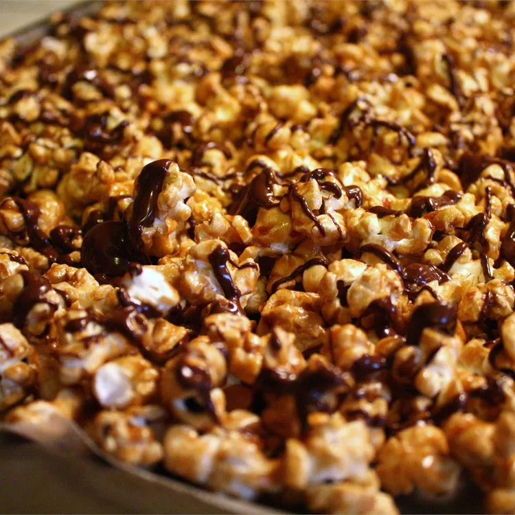

Caramel Corn Recipe

Description
Caramel corn with roasted peanuts and chocolate. This will take a while to make, but is well worth it!
Ingredients
- 16 cups popped popcorn
- 1 cup roasted peanuts
- 1 cup brown sugar
- ½ cup butter
- ¼ cup light corn syrup
- 1 teaspoon vanilla extract
- 1 teaspoon salt
- ½ teaspoon baking soda
- 1 cup milk chocolate chips
- 1 teaspoon shortening
Steps
- Grease cookie sheets.
- Place popcorn and peanuts in a paper bag. Set aside.
- In a microwave safe bowl, combine sugar, butter, corn syrup, vanilla and salt. Microwave 4 minutes, until bubbly. Stir in baking soda. Pour over popcorn mixture and shake bag to coat.
- Roll down edges of bag and place bag in microwave. Heat for 2 minutes, shaking three times to mix. Spread mixture onto prepared sheets to cool.
- In a microwave safe bowl, combine chocolate and shortening. Microwave 90 seconds, stirring once, until melted. Drizzle over popcorn mixture. Let cool before serving.